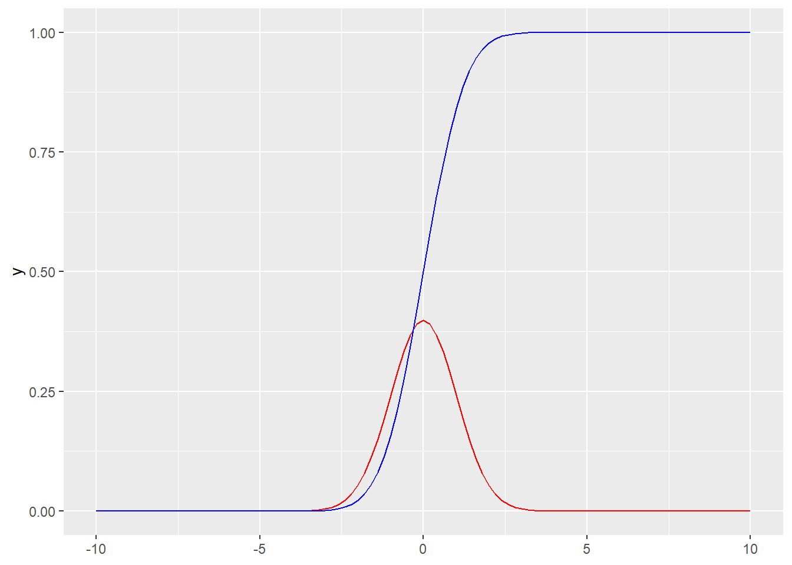

Code

样本点（sample point）是每一次随机试验的结果，用 \(\omega\) 表示。
样本空间（sample space）是所有样本点的集合，用\(\Omega=\{\omega_{i};i=0,1,2,... \}\)表示。
随机事件（random event）是一组样本点（\(\Omega\)的子集）的集合，用大写字母 \(A,B,C,...\)表示。
一个样本点的集合称为简单事件（simple event），用 \(\Omega=\{\omega\}\) 表示。
若干个简单事件的集合称为混合事件（composite event）。全集 \(\Omega\) 称为必然事件（deterministic event），空集（null set） \(\emptyset\) 称为不可能事件（impossible event）。
包含关系（containment） ：Venn diagram
\(A\subseteq B\)
\(A\supseteq B\)
并集（\(A\cup B\)）
交集（\(A\cap B\)）
补集（\(\bar A\)）
互斥事件 \(A\cap B=\emptyset\)
互补事件 \(A\cap B=\emptyset\) 且 \(A\cup B=\Omega\)
加法
\[ P(A\cup B)=P(A)+P(B)-P(A\cap B) \]
条件概率
\[ P(B|A)=\frac{P(A\cap B)}{P(A)} \]
乘法
\[ P(A\cap B)=P(A)\times P(B|A) \]
独立事件（交集的概率等于各自概率的乘积）
\[ P(B|A)=P(B) \ 或者\ P(A)=0 \]
全概率公式（给定Ai发生，B的加权平均条件概率）
\[P(B)=\sum_{i=1}^{n}P(A_i)P(B|A_i)\]
贝叶斯法则/逆概率公式（后验概率）
\[P(A_k |B)=\frac{P(A_k)P(B|A_k)}{\sum_{i=1}^{n}P(A_i)P(B|A_i)}\]
概率分布列： \(P(X=x_k)=p_k (k=1,2,…)\)
累计分布函数：\(F(x) =P(X≤x)= \sum_{x_k≤x}p_k\)
期望：\(E(X)=\sum_{k}x_k p_k(k=1,2,...)\)
方差：\(Var(X)=\sum_{k}x_k^2 p_k-\mu^2\)
组合（combination）：\(C_n^k =\frac {n!}{k!(n-k)!}\)
概率质量函数（pmf）：\(P(X=k)=p_k=C_n^k\pi^k(1-\pi)^{n-k} \ (k=0,1,...,n)\)
\[ X\sim B(n,\pi) \]
其中n表示独立试验的次数，\(\pi\) 表示成功概率。
累计概率：至多k0次成功的概率——\(P(X≤k_0)=\sum_{k=0}^{k_0} p_k\)
至少k0次成功的概率——\(P(X≥k_0)=\sum_{k=k_0}^{n} p_k\)
期望：\(E(X)=n\pi\)
方差：\(Var(X)=n\pi(1-\pi)\)
概率：\(P(X_1=n_1,...,X_i=n_i,...,X_k=n_k)=\frac {n!}{n_1!...n_i!...n_k!}\pi_1^{n_1}...\pi_i^{n_i}...\pi_k^{n_k}\)
\[ X \sim M(n,\pi_1,\pi_2,...,\pi_k) \]
其中\(n=n_1+n_2+...+n_k\) 表示独立试验的次数，\(\pi_k\) 表示\(k\) 个互斥结果的成功概率。
期望(\(A_i 与 -A_i\))：\(\mu_{A_i}=n\pi_{A_i}\)
方差(\(A_i 与 -A_i\))：\(\sigma_{A_i}^2=n\pi_{A_i}(1-\pi_{A_i})\)
概率： \(P(X=k)=p_k=\frac {\lambda ^k}{k!}e^{-\lambda} (\lambda > 0;k=0,1,…)\)
\[ X\sim P(\lambda) \]
其中\(\lambda\) 表示单位时间/空间罕见事件发生的期望值。
期望：\(\mu=\lambda\)
方差：\(\sigma^2=\lambda\)
当\(n(n≥100)\)足够大，\(\pi(\pi ≤0.01)\) 足够小，二项分布的均值 \(n\pi\) 与方差\(n\pi(1-\pi)\approx n\pi\) 近似相等，此时的二项分布近似\(\lambda=n\pi\) 的泊松分布。
\[ P(X=k)=C_n^k \pi^k(1-\pi)^{n-k} \approx \frac{\lambda ^k}{k!}e^{-\lambda} \]
概率：\(P(a≤X≤b)=\int_{a}^{b}f(x)dx\)
概率密度函数（pdf）：\(f(x)\)
累计分布函数（cdf）：\(F(x)=P(X≤x)=\int_{-\infty}^{x}f(t)dt\)
期望：\(E(X)\equiv\mu =\int_{-\infty}^{+\infty}xf(x)dx\)
方差：\(\sigma^2\equiv E(X^2)-\mu^2=\int_{-\infty}^{+\infty}x^2f(x)dx-[\int_{-\infty}^{+\infty}xf(x)dx]^2\)
概率密度函数（pdf）：\(f(x)=\frac {1}{\sigma\sqrt{2\pi}}e^{-\frac{(x-\mu)^2}{2\sigma^2}}（-\infty ＜x ＜+\infty）\)
累计分布函数（cdf）:\(F(x)=P(X≤x)=\int_{-\infty}^{x}f(t)dt=\frac{1}{\sqrt{2\pi}\sigma}\int_{-\infty}^{x}e^{-\frac{(t-\mu)^2}{2\sigma^2}}dt\ (-\infty＜x＜+\infty)\)
\[ X \sim N(\mu,\sigma^2) \]
\[ Z=\frac {X-\mu}{\sigma} \sim \ N(0,1) \]
pdf：\(\varphi (z)=\frac{1}{\sqrt{2\pi}}e^{-\frac{z^2}{2}} (-\infty＜z＜+\infty)\)
cdf：\(\Phi(z)=P(Z≤z)=\int_{-\infty}^{z}\varphi (\nu )d\nu =\frac{1}{\sqrt{2\pi}}\int_{-\infty}^{z}e^{-\frac{\nu^2}{2}}dt\ (-\infty＜z＜+\infty)\)
直方图：钟形分布（bell-shaped distribution）

茎叶图（Stem-and-Leaf Plot）
P-P图是累计相对频率的观测值（x轴）与理论值（y轴）的散点图；
Q-Q图是分位数的观测值（x轴）与理论值（y轴）的散点图。
偏度=0 且 超值峰度=0
当\(n\pi(1-\pi)≥5 且X\sim B(n,\pi)\)时，\(P(a≤X≤b)近似等于X\sim N(n\pi,n\pi(1-\pi))在区间(a-0.5,b+0.5)上的曲线下面积\)。
\[ Z=\frac{x-\mu}{\sigma}=\frac{x-n\pi}{\sqrt{n\pi(1-\pi)}} \]
当\(\lambda≥10 且X\sim P(\lambda)\)时，\(P(a≤X≤b)近似等于X\sim N(\lambda,\lambda)在区间(a-0.5,b+0.5)上的曲线下面积\)。
\[ Z=\frac{x-\mu}{\sigma}=\frac{x-\lambda}{\sqrt{\lambda}} \]